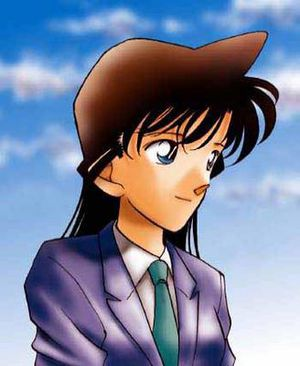

Detective Conan
 De: La Frikipedia, la enciclopedia extremadamente seria.
De: La Frikipedia, la enciclopedia extremadamente seria.
| De la serie anime para todos:
|
| Detective Conan
|
|
|
| SAY HELLO TO MY LITTLE FRIEND!!!
|
|
| Género:
|
Chonen
|
| Episodios:
|
Tropecientos
|
| Autor del manga:
|
Gosho Auyama
|
| Publicación:
|
1994 AC
|
| Publicado en:
|
Shonen Sunday
|
| Director del anime:
|
Kenji Kodama
|
| Transmitido en:
|
NTV
|
| Ovas:
|
Bastantes
|
| Películas:
|
Muchas
|
| Notas
|
No es Conan El Barbaro
|
Detective Conan es otro invento de los japoneses para dominar el mundo. Si lo ves demasiado descubrirás como es Japón en realidad, una ciudad lleno de asesinos y chulos, empezarás a pensar que te persiguen asesinos, ladrones, violadores,... y que sucederán crimenes allá donde vayas.
Historia

Así estaba este artículo antes de adoptarlo.
Serie creada por Agatha Cristie Gosho Aoyama que se centra en las paranoias aventuras de Con Ano Edogawa o Bebohagua, un niño listillo y repelente obsesionado con resolver crímenes desde que, a los tres años, le regalaron un Cluedo, y, con sus hábiles dotes de investigador, descubrió que su propio padre fue quien asesinó a su tía Clodovea (de verdad, no en el juego). Desde entonces, el chico desarrolló un talento innato para resolver problemas y enigmas gordos, y también una mala sombra de no te menees, pues allá donde iba, ya fuera un bar o una guardería, siempre sucedería un asesinato.
La historia comienza en la feria del pueblo, con su puesto de churros, sus feriantes con tatuajes, los detective, se dedica a deducir quien es el asesino, mientras la novia, sola, se vuelve a casa por que su amor se ha olvidado de ella. El joven, cuando se da cuenta de que su amada se ha ido muy cabrada a su casa, intenta alcanzarla metiéndose por un callejón, pero en ese callejón había una famosa y dos hombres de negro; uno gordo, y el otro escuchimizao y con cuerpo escombro. Entonces el joven detective ve como la famosa le da un maletín de billetes a cambio del negativo de unas fotos en las que salía ella en porretas. Como Sin Chichi lo ve todo, le meten una colleja y le hacen tragarse con unas pastillas con sabor a vainilla, a las que en vez de veneno le habían puesto Rejuvenecetamol 74, que es lo que toman algunas famosas para conservarse jóvenes (aparte del Botox, claro) y el joven detective rejuveneció 10 años. Fue a contárselo al profesor Gasa, quien le dijo que lo guardara en secreto ya que la banda podría ser peligrosa y se lo podían cargar si superan que sigue vivo, entonces, a Sin Chichi se le ocurrió una idea brillante: cambiar su imagen radicalmente para que no le reconozcan. El cambio consistia en unas gafas con solo un cristal (que no se la quita ni para ducharse para que no le reconozcan) y una pajarita (sí, un cambio bestial). También se busca un nombre falso, el de "Conan Bebohagua", y se instala en la casa de su follamiga Rana para poderle ver en porretas porque ella piensa que realmente es un niño de 7 años. El padre de Rana, Kogote Mauri, es un detective de mierda pésimo, que gracias a las ayudas de Conan y su pajarita (que puede poner la voz que quiera menos la Loquendo y consigue resolver los crímenes y que se lleve todo el mérito el borracho mujeriego de Kogote.
La resolución de los crímenes siempre tienen el mismo Modus operandi:
- Conan, que es más listo que el hambre, descubre al asesino.
- Conan duerme a Kogote con un reloj calculadora que tiene una mini ballesta incorporada
- Conan imita la voz de Kogote voz con la pajarita.
- Nadie sospecha que Kogote esta dormido, que habla sin mover la boca, y se lleva todo el mérito.
Personajes
Principales
 Rana Mauri, la follamiga de Shinichi
Kogote en su hábitat natural
Sinchichi Shinichi Kudo: es el nombre real de Conan, lo utlizaba antes de encogerse y despúes de encojerse para entrar en los salones donde las chicas se desnudan a cambio de dinero poniendo el número de su tarjeta de crédito. Su pasión son los asesinatos y Ran Mouri. Tiene fantasias eróticas con cadaveres. Tiene múltiples personalidades, una de ellas es la de Chucky (por eso se encuentra tantos casos), otra de ellas es la de Mr. Bean. Es un adicto al Cluedo y a las drogas.- Conan Edogawa:(No confundir con Conan el bárbaro ni la Akatsuki de Naruto, esa empieza con K) Es el nombre falso que se le ocurre a Shinichi después de encoger, hace de niño sabelotodo y bastante repelente al que le gusta vestirse como un pijo y se cree que es el más "cool" del mundo por llevar un supuesto "smoking" y sus Gafas de los Chinos de la esquina. Intentó instaurar la moda de la pajarita, pero sin éxito. Toma droga y otras sustancia estrañas, y a eso se debe el enorme desarrollo de su cabeza. Le ponen las personas muertas y los animales muertos, por eso le encanta encontrarse cadáveres por todos lados.
- Rana Mauri: La follamiga de Shinichi. Ran sufre cada día al no tener un nabo pa follar, además, no se da cuenta que Conan es Sin Chichi, porque con las gafas que Conan no se quita ni pa dormir, por que el cambio es algo exagerado, oxe. Cuando se cabrea suelta unas patadas mu fuertes.
- Kogote Mauri: es el padre de Rana y es
el peor detective del mundo un detective miserable. Es un borracho, un inútil, un pervertido y más perro que Homer Simpson. Anque hay gente que tiene la hipótesis de que en realidad tiene un coeficiente intelectual de más de 2000, y por eso deja que Conan le resuelva sus casos y que Rana le haga de señora de la limpieza. Fue el que acogió a Conan en su casa para que le resuelvan los crímenes.
- Profesor Gasa: Un viejo que al no tener amigos en el Club de petanca se va con críos. Le encanta inventar cacharros que en la vida real podrían valer una fortuna, pero el muy tonto se los da a Conan, así, por las buenas. Le llaman profesor porque les enseña educación para la ciudadanía. En un experimento se le quedó una patata pegada en la nariz, que no se puede quitar. Aún no lo sabe nadie, pero el profesor Gasa encontró en antídoto para Conan, pero no se lo quiere dar porque el está enamorado de Ran (por eso le dijo a Conan que no se lo dijera a nadie...)
Secundarios
- Heiji Hattori: es un detective de Osaka clon de Shinichi, solo que sometido a rayos UVA. En un intento desesperado de llamar la atención se puso unas cejas como las de Rock Lee. Es el único que se ha dado cuenta de que Conan es Shinichi, por eso es el segundo más listo (sí, todos nosotros ya nos dimos cuenta...).
- Kazuha Toyama: es la follamiga de Heiji y está enamorada de él. Por eso está todo el día pegado a su culo. Si Heiji hace de Shinichi, Kazuha es su Rana.
- Yukiko Kudo: madre de Shinichi; está demasiado buena para ser madre de un adolescente de 17 años, es actriz
porno .
- Eri Kisaki: Madre de Ran. Se separó de Kogoro (obviamente) y trabaja de abogada. Es una friki
de mierda y se intentó acer un peinado a lo "Star Wars", por eso lleva una ensaimada en el pelo.
- Kaito Kid / Kid el Ladrón: Es un famoso Gosho Aoyama es tonta, nunca lo pillan, y eso que cuando va disfrazado es fácilmente reconocible (Con lo fácil que es ponerse un pasamontañas o usar el maquillaje milagroso que usa para
travestirse disfrazarse). Con lo fácil que es meterle un dardo tranquilizante o un bazookazo cuando esta haciendo el gilipollas... también conoce el secreto de Sinchichi Shinichi y su follamiga mejor amiga es la hija de un inútil inspector de policia que le hace la competencia a Megure.
¿Sonó Oko? Sonoko Suzuki: la mejor amiga de Ran, es una pija que se pasa el día buscando novio a pesar de tenerlo la muy putona. Es heredera del Imperio Suzuki Gran Vitara.- Makoto Kyougoku: es el novio "oficial" de Sonoko. En realidad es un immigrante ilegal y sólo quiere a Sonoko por los papeles.
- Sharon
Stone Vineyard: actriz amiga de Yukiko.
- Yoko Okino: Célebre cantante, es la heroína (no la droga) de Kogoro, que cuando se la casca piensa en ella (cuando no está mirando sus fotos y pósters). Los últimos rumores afirman que es prima segunda de Yoko, el de los Petit Suisse.
- Doctor Araide: pues eso, un doctor. Últimas investigaciones lo relacionan con Arale, de ahí su nombre tan parecido.
- Azusa: es la camarera del bar de debajo del despacho de Mouri. Cuando Kogote baja a merendar siempre se lleva una palamadita en el culo por lo menos, lo que pasa es que lo censuran.
Liga juvenil de detectives
La liga juvenil entregando premios en la gala de los Goyas
Son un grupo de niñatos que ven demasiadas películas del agente 007, y se dedican a joder intentar ayudar a la policía cuando están en medio de un caso. Estos son los miembros:
- Ayumi (o Shizuka): una niña muy cursi con la cabeza en forma de champiñón que está colada por Conan. Con ella Conan descubre el gusto por el Lolicon y piensa en meterla en un cuarto oscuro y enseñarle el mundo adulto
- Genta (o Gigante): (También conocido como "niño lápiz" por su cabeza en forma de 'flan'(Según STF). Este es un chaval físicamente parecido al "Gigante" de Doraemon, es bastante plasta y bruto y le encanta comer. Siempre lleva algo en la cabeza, no se sabe si es un chichón, un trasquión o es que a sus 7 años ya se le cae el pelo.
- Mitsushiko (o Suneo): un mocoso pijo, ricachón (igual que Suneo de Doraemon) y obsesionado con la ciencia. Cuentan que una vez se fue al campo a coger flores para su colección herbolaria cuando se resbaló con un escupitajo de Genta, se cayó de culo en una zarzamora y se quedó dos semanas sin poder sentarse.
- Ai Haibara: es una chica depresiva que se encogió al igual que Conan. Se tomó una pastilla rejuvenecedora que creó ella misma pensando que era Ibuprofeno porque tenía la regla y la dolía la tripa. Antes era una científica de 19 años y ahora una niña sociópata que se dedica a marginarse en el laboratorio de un viejo pederesta con el que comparte casa (Agase
Sarase). Vive en su casa de gorra. Hace tiempo que averiguó cuál era la cura del veneno que ella creó, pero no quiere sacarlo a la luz porque se vive muy bien en casa de Agase sin dar palo al agua ni pagar alquiler.
- Inspector Megure: es el jefe de toda la poli, es gordo y bastante feo. No se quita el sombrero ni para ir en moto. Se encuentra SIEMPRE con Conan y/o Kogote Mauri. No duerme por las noches, prefiere ver CSI para parecer profesional en su trabajo.
- Miwako Sato: Se ha follado a todo el departamento de policía, lo que más le gusta es el sexo salvaje, siempre está tonteando con todos los polícias por que es una ninfómana del uniforme. Es prima segunda de Hattori. En un intento de llamar la atención, se hizo el peinado de Rock Lee. Es también la esposa del famoso Takuma Sato.
- Wataru Takagi: un inspector
gilipollas obediente que suele acompañar a Megure. Está enamorado de Sato, pero no se atreve a decírselo porque cree que le va a rechazar, cuando esta tía nunca ha dicho que no a un polvo con un policía.
- Chiba: otro agente, amigo del pariolo de Takagi. Es más pesao que un collar de melones y tiene unos tocinos que podría acabar con el habre en el tercer mundo si lo sacrificaran para comer. Se pasa el día ventilándose menús familiares del Burger King.
- Yumi Miyamoto: agente encargada del tráfico, se dedica a
joder ayudar a Takagi en su relación con Sato. En realidad todos sus planes de amor fracasan porque está enamorado de él.
- Shiratori: El único inspector, junto con Sato, que da la talla. Es un mutante marino, ya que tiene el pelo de coral. Se rumorea que un día sufrió un catarro, pero fue a trabajar porque es un tío eficiente.
- Yamamura: un inspector bastante infantil y tonto que admira mucho a Mauri. Las explicaciones a todos los casos que le encomiendan son fantasmas
y el abuelo de Heidi.
- Yokomizo: inspector que no sabe nadar y que tiene unas algas en el pelo.
- Naeko Miike: Es una tía a la que meten en la serie por rellenar. Aunque está buena, está enamorada de Chiba inexplicablemente. A la vez, mantiene una relación lésbica con Yumi.
- Jodie (Jodí, del verbo joder) Starling: más conocida como Jodie Saintemillion y profesora de inglés de Ran. En realidad se llama Jodie Starling, es agente del FBI y tiene las tetas enormes. Alumnos suyos tiran el lápiz al suelo para que lo recoja y verle el escotazo, se pirra por los vinos, sobre todo el de Jerez, por eso se especula si ha ido a venarear a la costa del sol.
- Shuuichi Akai: agente del FBI que lleva una gorra de lana negra mugrosa con más piojos que un rastafari, tiene mirada felina y una varita que echa polvos mágicos a Jodie.
- James Black: jefe de los dos anteriores, es un vejete al que secuestran cuando llega a Japón pero Conan (cómo no) le salva. A veces sufe de impotencia, por eso recurre al viagra.
Malos malosos
Gin y Vodka extorsionando cual policía de Coslada
Por alguna razón, a los integrantes de los "Misteriosos hombres de negro", en el que uno colabora en el programa de Pablo Motos les da por ponerle motes de bebidas alcoholicas, pensaron en ponerse nombre de flores pero no imponía.
- Gin: Es un melenas jebi fanático del metal. Viste con un sombrero de señorito y con una capa negra (plagio de superman). Lleva armas ocultas por todos los lados de su cuerpo. Es un malo muy maloso y parece un plátano gigante. Es un psicópata, pero si le quitas sus ropas negras te encuentras con un tio flacucho y cuerpo escombro.
- Vodka: Es un lapa pegajoso que siempre acompaña a todos los lados a Gin. Es enano y feo, y cree que llevando gafas de sol se convierte en el hombre más guay del mundo (como Risto Mejide). Dato interesante: un día se encontró 20 Leros y los cambió a yenes, después se lo gastó en un disco de Ramoncín.
- Vermouth: Es la típica americana super guapa. Su pelo es la mutación entre una medusa y un estropajo. Le mola Vodka. Habla en inglés subtitulado y es la hermana secreta de Kogoro Mouri. Le gusta el pr0n francés. Es una muestra de la poca imaginación de Gosho Aoyama: es exactamente igual que Jodie.
¿Sabías que...?
- ...
Galindo Lorenzo de Hermanos & Detectives, la serie que emite Telecinco, es un plagio de este Anime?
- ...en Japón no existe la apuñalada o los dos tiros, sino que los asesinatos son unos complicados y métodicos planes que dejan perplejos a la policía y sólo pueden ser resueltos por un niño?
- ...Conan, al igual que su héroe Sherlock Holmes, consume cocaína?
- ...Ran nunca ha tenido novio porque a cada chico que conoce le da una paliza de muerte de forma cariñosa?
- ...Kogote Mouri es también llamado Orochi, así es en Japón debido a su mala fama de gafe, lo que viene a ser en español "Satán"?
- ... El profesor Gasa, que de profesor tiene una mierda, inventa cada trasto inútil que no patenta.?
- ...Aunque parezca mentira este tipo de trasto se inventan todo los días en Japón?
- ...el mayor ladrón de todo los tiempos es un mariquita? Todo lo contrario que en la vida real, que es un colombiano que legalmente no existe?
- ...en un capitulo, Kogote muere de sobredosis por ingestión vía intravenosa de somníferos?
- ...el único inspector de Japón, Megure, sufre un grave retraso mental al posser sólo 20 CROMOSOMAS?
- ...los protagonistas son unos guarros que nunca cambian de ropa?
- ...Shinichi estuvo a punto de fichar por el Real Madrid?
- ...Kogoro sabe que el niño resuelve los casos, pero no dice nada mientras siga cobrando?
- ...Conan tiene padres, que no es huérfano ni está adoptado por los Mouri. Simplemente sus padres no lo quieren?
- ...Sin Chichi jugó un partido en el polideportivo de Tokio, y que en los equipillos le tocó con Oliver Aton?
- ... Han hecho un anime tan raro que no tiene fin porque no saben por donde cogerlo?
- ... los Malos Malisimos estan detras de ti para pegarte una ostia?
- ... acabas de girarte para ver si estan?
- ... si lo has hecho eres imbecil?
- ... el nombre de la
marihuana droga que invento Haibara tiene un nombre mas largo que el numero Pi?
- ... que la droga que inventó Haibara la pantentó al final y ahora el conocida como "Dulco-Lapso"?
FAQ Preguntas sobre Conan
- ¿Cómo es posible que la policía nunca se dé cuenta de que Kogote no habla? ¿Y que tampoco se fijen en que no se mueve? ¿Acaso son... tontos?
- No, no son tontos, pero no ven un burro a tres pasos. Otras teorías sugieren que Conan los droga con dardos alucinógenos y así quedan, pal arrastre.
- ¿Por qué cuando Conan usa las voces de Kogote y Megure para traer a ambos a la escena del crimen para detener al asesino nunca sospechan que, al encontrarse, el otro les diga: "¡Pero si me has llamado tú!"?
- Porque Kogote es sinceramente tonto, y Megure se llevó un golpe muy grande en la cabeza cuando era joven.
- ¿Por qué nadie sospecha de Conan, que a su edad sabe montones de cosas y no para de hacer observaciones en los asesinatos, y siempre pone como excusa "me lo explicó Shinichi" o "lo vi en la tele"?
- Porque la tele es omnipotente, todo lo sabe todo lo ve y todo lo puede.
- ¿Por qué Conan SIEMPRE se encuentra casos allá donde va?
- Porque es gafe, y allá adonde vaya alguien muere. A esto también se le conoce como "El sindrome de Jessica Flecher"
- ¿Por qué se casó Kogoro si es un pervertido y siempre está con otra?
- Porque casarse con una abogada da sus ventajas... Lo malo es que al divorciarse, igual que en la boda todo pa'ella, menos la hija y sus gastos.
- ¿Por qué Shinichi es casi perfecto? ¿Cómo es posible que exista un ser humano con tantas virtudes?
- Por que es sobrino de Elsa Pataky que es PERFECTA DEL TODO. Y, por cierto, no se saben "todas las virtudes de Conan".
- ¿Por qué Conan, cuando todo parece indicar que le van a matar, se salva porque aparece Ran o algo así?
- Por que si se muere se acaba la gracia del anime
- ¿Por qué Aoyama tiene tantas ideas de montajes y trucos para asesinar y/o hacerse una coartada?
- Porque planea Dominar el mundo y se pasa horas y horas pensando la forma de matar a los jefes de Estado.
- ¿Por qué Conan sólo se encuentra con alún miembro de la Organización en el 1% de los capítulos, si se supone que su objetivo es volver a ser Shinichi?
- Por que el objetivo de la productora es hacer más capítulos de Dragon Ball, que casi llegan a los 500. Si llegara a aparecer un miembro de la organización en todos los capítulos, no pasarían de los 50
- ¿Por qué Conan, al igual que Kogoro, Megure, etc. siempre lleva la misma ropa? Será guarro...
- Exacto, serán guarros...
- ¿Por qué Ran nunca se despeina?
- Utiliza fijador de pelo con extracto de semen
la muy guarra.
- ¿Por qué Conan quiere volver a ser mayor, si de pequeño se baña con Ran, duerme con ella, etc.?
- Porque siendo pequeño no puede... ¿Ir a discotecas?
Shinichi no va a discotecas...
Aunque mas bien es porque al ser un niño de 10 años, no tiene el "asunto" a plena capacidad. Vamos, que no se le levanta ni con 5 kilos de viagra, aunque Ren lo haya intentado por este método y por el método extremadamente sutil que nadie discrepa respecto a usarlo en niños como Conan
- ¿Cómo coño es posible que la gente que organice unos crímenes tan buenos y meticulosos que solo Conan puede resolverlos, tengan unos motivos/razones para hacerlos tan estúpidos o gilipollescos de una mentalidad de subnormales? ¿No pueden decir simplemente que quieren matar/delinquir por gusto?
- No sé....la droga que se chutan, no me hagas preguntas estúpidas o sin respuesta, al fin y al cabo, son dibujos animados...
- ¿Como es posible, muriendo ya alrededor de mil personas en la serie de Conan, Japón tenga el indice de asesinatos mas bajo?
- La droga.
- ¿Por qué Conan sangra por la nariz al ver a Ran desnuda o con ropa ajustada?
- Por la droga, claro... ¿qué pensabas, pervertido? El chico sólo tiene 6 años.
- ¿Por qué Kid el ladrón hace tantas gilipolleces?
- Porque en su instituto es un moja y quiere llamar la atención de las chicas.
- ¿Sufre Conan el sindrome de Oliver y Benji?
- Sí... por desgracia es un mal irremediable para su generación.
- ¿Por qué cuando Conan duerme a Kogoro, este siempre cae en una silla o una pared y nunca se cae al suelo de morros, por ejemplo?
- Por que Kogote tiene un campo gravitatorio en el culo que hace que se atraiga a las sillas.
- ¿Por qué algunos clientes invitan a Kogote Mauri para que vayan al lugar donde se va a cometer un asesinato, y sabiendo que Kogote está presente cometen el crimen?
- Por que padecen alguna patología grave que hace que el cerebro... Es más facil llamarlos gilipollas... Otra respuesta es que le gustan los retos, o que quieren ir a la cárcel por que tienen ganas de que se les caigan el jabón en las duchas.
- ¿Por qué este artí-culo
es era tan malo?
- Porque su autor estaba bajo los efectos del alcohol y paranoias veraniegas.
Hechos sobre conan
- Los personajes de esa serie no usan gomina, usan un cemento transparete que regala el ayuntamiento que es usado tambien en las naves espaciales.
- Conan no es gafe ni tiene mala suerte. La razón de que la gente muera por donde el va es que los mata el mismo.
- Conan no es un buen detective, prepara las pruebas y se inventa historias para que no se descubra que el es el verdadero asesino.
Típico capítulo
Este grupo de gente (Conan, Ran y Tio) van a alguna chorrada donde encuentran a un grupo de desconocidos en el cual hay uno al que todos tienen motivos para matar. Se hacen amigos inseparables de ese grupo y matan al odiado. La policía determina que es un accidente. El niño tiene una revelación, duerme al tío y lo resuelve.
Registro de un caso real tal como sucedió, no como está en un informe
-El asesino ha sido Tamagochi.
-Pero, pero… si Tamagochi no tenía llaves… ¿cómo iba a entrar a la escena del crimen?
-Muy sencillo, inspector. Se trajo a un león, y el león echó abajo la puerta, por eso hay arañazos en la madera.
-Venga ya, Conan, si te he visto esta tarde rayando la puerta con las llaves…
-¿Quieres que te acuse del asesinato de tu hermana? ¿No? Pues cállate y sígueme el rollo.
Autor(es):
- Krusher
- Nexo
- Fordus
- Frikiman
- Aque
- Caraacnénerdi
- Roms
- El Xarlie
- May
- Shinichi
Frikipedia 2005-2016, Licencia
GFDL 1.2 - Extraído por FrikiLeaks